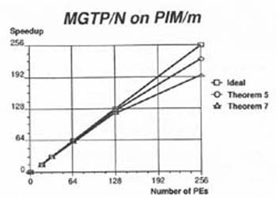
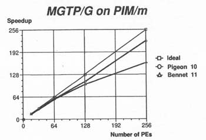

MGTPは高速かつ高機能の自動推論エンジンを提供することを目標に、PIM上に 研究開発されたシステムである。データベース的応用指向及び数学的応用指向 の2種がある。前者 (MGTP/G) は有限領域を、後者 (MGTP/N) は無限領域を扱 う定理証明系であるが、両者とも性能に関しては世界最高水準にある。
無限領域の定理証明系としては、これまで米国ANLで開発されたOTTERが機能、 性能面ともに他を先行していたが、OTTER方式に比べ、メモリ量、計算量のオー ダを数桁下げる新しい方式 (遅延モデル生成法) を開発するとともに、従来困 難とされていた分散メモリアーキテクチャ上での並列化方式を実現した。これ により、MGTP/NはPIM/m単一PE上で、SPARC II上のOTTERの2〜5倍、 PIM/m-256PE上では、400〜1000倍の性能を達成した。
一方、有限領域の定理証明系MGTP/Gについては、与えられた問題節をKL1節に 直接コンパイルする手法、並びに場合分けにより生じる組合せ的爆発を抑制す る手法 (ノンホーン・マジックセット) を開発した。MGTP/Gでも、MGTP/Nと同 様に、PIM/m- 256PE上で200倍以上の速度向上を達成している。MGTP/Gを用い て、有限代数の問題を試みた結果、カナダの数学者Benettにより提示された準 群に関する未解決問題の一部を、自動的に証明することに成功した。
MGTPの機能拡張の一環として、論理プログラミングで開発された「失敗による 否定」をMGTPの枠組へ組み込む手法を開発した。本手法は、法的推論システム HELLIC IIのルールベース・エンジンに採用されている。さらに、本手法の変 形として、仮説推論システムをMGTP上に構築する方式を開発した。まだ実験段 階であるが、従来の方式と比較しても、遜色のない結果が得られている。

MGTP/N の台数効果

MGTP/G の台数効果